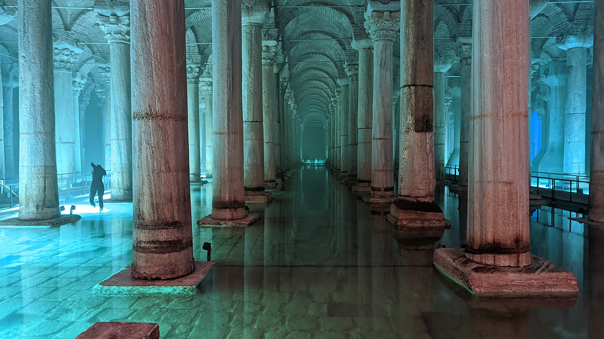

Yerebatan Sarnıcı
İstanbul'da şehrin su ihtiyacını karşılamak üzere 526-527 senelerinde yaptırılmış kapalı su sarnıcı.
Ayasofya'nın güneybatısında, Soğukçeşme Sokağı'ndadır. Suyun içinden yükselen pek çok mermer sütun nedeniyle halk arasında Yerebatan Sarayı olarak isimlendirilmektedir. Sarnıcın üzerinde daha önce bir bazilika bulunmasından ötürü, Bazilika Sarnıcı olarak da adlandırılır.
Bizans imparatoru I. Justinianus tarafından yaptırılan sarnıç, şehrin birinci ve ikinci tepeleri arasındaki bölgelerin su ihtiyacını karşılayan Hadrianus su yollarına bağlanmıştı. İstanbul'un Osmanlılar tarafından fethinden sonra Sarayburnu ve Bahçe Kapısı civarına su dağıtım merkezi olarak hizmet sundu; Osmanlılar'ın şehirde kendi su tesislerini kurmasından sonra kullanılmasa da merkezinde olduğu mahalleyi temsil eden fiziksel bir simge durumuna geldi; ismi saraya, sadrazamın ahırlarına, caddeye ve mahalleye verildi.
Günümüzde müze ve etkinlik mekanı olarak kullanılır. İstanbul Büyükşehir Belediyesi iştiraklerinden Kültür A.Ş. tarafından işletilmektedir.
